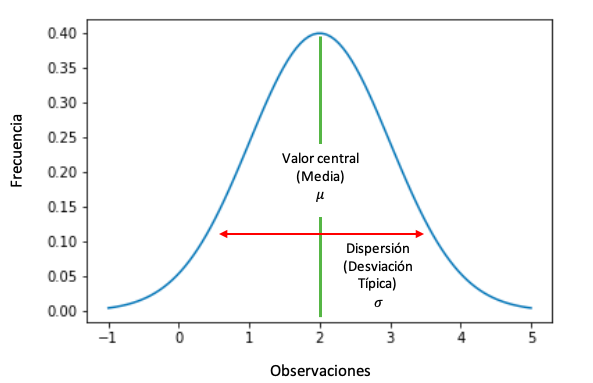
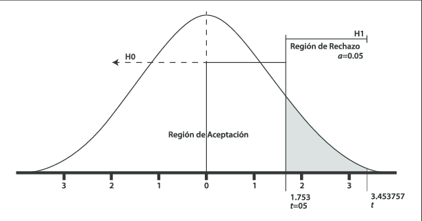
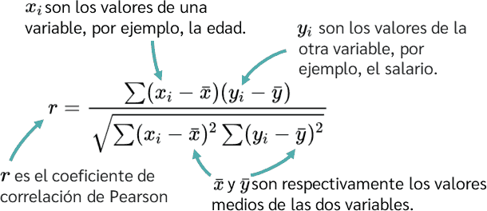

Probabilidad y Estadística

¡Hola!, en esta página web, colocaremos información acerca de los 5 subtemas vistos en la clase de Probabilidad y Estadística, los cuales son: tipos de variables, medidas de dispersión, distribución normal, prueba de hipótesis y correlación, a los cuales puedes acceder rápidamente usando la barra superior haciendo clic en el subtema al que deseas acceder. Además, añadimos una sección para que conozcan a los integrantes del equipo y también puedan agregar cualquier comentario o duda acerca de la página y su contenido.
Estoy muy agradecida por los aprendizajes que adquirí en esta materia durante el curso del semestre, espero poder comunicarles lo que he aprendido de una manera clara y eficaz para asegurarme de que conozco bien los temas de la asignatura. Como ya lo mencioné antes, cualquier comentario o duda pueden escribirla en la sección de comentarios al final de esta página web para leer lo que piensan y poder responder aquellas dudas que puedan surgir al momento de indagar sobre estos subtemas.
Tipos de variables

La estadística, como disciplina matemática, se basa en la recopilación, análisis e interpretación de datos. Uno de los aspectos fundamentales para entender y trabajar con datos es la clasificación de las variables. Las variables son características o propiedades que pueden variar y que son objeto de estudio en una investigación o análisis estadístico. En estadística, las variables se clasifican principalmente en dos tipos: variables cualitativas y variables cuantitativas.
Variables Cualitativas
Las variables cualitativas se centran en aspectos no numéricos o categóricos de los datos. Estas se subdividen en dos categorías:
- Nominales: representan categorías sin un orden específico. Ejemplos comunes incluyen el color de un automóvil, el género de una persona o el tipo de animal. No existe un valor numérico inherente en estas categorías. Por ejemplo: Color de ojos (Azul, Marrón, Verde).
- Ordinales: Aquí, las categorías tienen un orden específico o jerarquía, pero la distancia entre los valores no es significativa. Ejemplos incluyen rangos educativos, clasificaciones de películas o niveles de satisfacción. Por ejemplo: Nivel de satisfacción de un restaurante (Bajo, Medio, Alto).
Variables cuantitativas
Las variables cuantitativas implican medidas numéricas y se dividen en dos categorías:
- Discretas: Representan valores contables o enteros. Estas variables tienen puntos específicos y finitos, y no pueden tener valores intermedios. Ejemplos incluyen el número de estudiantes en una clase o la cantidad de productos vendidos. Ejemplo: Cantidad de hijos (0, 1, 2, ...).
- Continuas: Estas variables pueden tener un rango infinito y representan mediciones precisas. Pueden tomar cualquier valor en un intervalo dado. Ejemplos incluyen la altura de una persona, el peso de un objeto o el tiempo que lleva realizar una tarea. Ejemplo: Altura (en metros).
Otras consideraciones
- Variable Dependiente e Independiente: En el contexto de experimentos o estudios, se habla de variables dependientes (respuesta) e independientes (control).
- Variables Dummy: En análisis estadístico, especialmente en modelos de regresión, las variables dummy se utilizan para representar categorías cualitativas en forma de variables binarias (0 o 1).
- En la teoría de la probabilidad, las variables aleatorias representan resultados de un experimento aleatorio y pueden ser discretas o continuas.
Medidas de dispersión

Las medidas de dispersión son herramientas estadísticas que nos proporcionan información sobre la variabilidad o dispersión de un conjunto de datos. Mientras que las medidas de tendencia central, como la media y la mediana, ofrecen una idea de la ubicación central de los datos, las medidas de dispersión nos indican cuán dispersos o dispersas están esas observaciones alrededor de la media. Existen varias medidas de dispersión, entre las cuales se destacan la varianza, la desviación estándar, el rango y el rango intercuartílico. Cada una de estas medidas aporta información única sobre la dispersión de los datos.
Algunos ejemplos son:
-
Varianza: La varianza es una medida que representa la media de los cuadrados de las desviaciones de cada dato respecto a la media aritmética.
Es calculada mediante la fórmula
 donde n es el tamaño de la muestra, xi (x sub-i) es cada observación, xˉ (x testada) es la media de las observaciones.
donde n es el tamaño de la muestra, xi (x sub-i) es cada observación, xˉ (x testada) es la media de las observaciones.
-
Desviación estándar: La desviación estándar es simplemente la raíz cuadrada de la varianza y se denota por s (en caso de muestra, pero si fuera una
población, se denotaría por la letra griega sigma minúscula). Proporciona una medida de dispersión en la misma unidad que los datos originales.
Su fórmula es
 .
.
- Rango: El rango es la diferencia entre el valor máximo y el valor mínimo en un conjunto de datos. Aunque es fácil de calcular, el rango puede ser sensible a valores atípicos y no proporciona información detallada sobre la distribución interna de los datos.
-
Coeficiente de variación: El coeficiente de variación mide la variabilidad relativa de un conjunto de datos y se expresa como un porcentaje.
Se calcula dividiendo la desviación estándar por la media y multiplicando por 100. Tal como se ve en la siguiente imagen:
 .
.
Distribución normal
La distribución normal, también conocida como distribución gaussiana, es una de las distribuciones estadísticas más importantes y ampliamente utilizadas en la teoría de probabilidad y la estadística. Su forma característica es la de una campana simétrica y suave, lo que la convierte en una herramienta valiosa para modelar y comprender una amplia variedad de fenómenos en la naturaleza, la ciencia y la sociedad. Algunas características clave de la distribución normal son:
- Forma de campana: La función de densidad de probabilidad de la distribución normal tiene una forma de campana simétrica alrededor de su media. La simetría implica que la mitad de la distribución está a la izquierda y la otra mitad a la derecha de la media.
- Parámetros: La distribución normal está completamente caracterizada por dos parámetros: la media (μ) y la desviación estándar (σ). La media determina la ubicación central de la campana, mientras que la desviación estándar controla la dispersión o anchura de la distribución.
- Regla 68-95-99.7: Esta regla empíricamente establece que aproximadamente el 68% de los datos se encuentran dentro de una desviación estándar de la media, el 95% dentro de dos desviaciones estándar y el 99.7% dentro de tres desviaciones estándar.
- Propiedad de suma y media: La suma de un gran número de variables aleatorias independientes y idénticamente distribuidas tiende a seguir una distribución normal debido al teorema del límite central. Esto hace que la distribución normal sea fundamental en la inferencia estadística.
- Estandarización: La estandarización es el proceso de transformar una variable normal a una distribución estándar normal, con una media de 0 y una desviación estándar de 1. Esto facilita la comparación y el cálculo de probabilidades usando tablas de la distribución normal estándar (z).
La distribución normal es ampliamente utilizada en la estadística inferencial, donde se asume que muchos fenómenos naturales y sociales siguen este patrón. Además, es fundamental en pruebas de hipótesis, intervalos de confianza y en la modelización de errores en diversos modelos estadísticos. Su versatilidad y aplicabilidad han llevado a su uso extensivo en diversas disciplinas científicas y de investigación.
Prueba de hipótesis
La prueba de hipótesis es una herramienta fundamental en la estadística inferencial que se utiliza para tomar decisiones basadas en datos observados. Su objetivo es evaluar afirmaciones o suposiciones sobre parámetros poblacionales y determinar si hay evidencia suficiente para rechazar o no rechazar una hipótesis nula. Esta es una descripción detallada del proceso de prueba de hipótesis:
-
Planteamiento de hipótesis:
- Hipótesis nula: Es la afirmación inicial que se quiere poner a prueba.
- Hipótesis alternativa: Es la afirmación que se aceptaría si se rechaza la hipótesis nula.
- Selección del nivel de significancia: El nivel de significancia es la probabilidad de cometer un error tipo I, es decir, rechazar la hipótesis nula cuando es verdadera. Suele establecerse en 0.05, pero puede variar según la situación y la importancia del error.
- Recopilación de datos: Se recopilan datos relevantes de una muestra representativa de la población de interés.
- Estadístico de datos: Se elige un estadístico de prueba adecuado para la prueba y los datos disponibles. El estadístico se calcula a partir de la muestra y sigue una distribución de probabilidad conocida bajo la hipótesis nula.
- Regla de decisión: Se establecen las reglas de decisión basadas en el estadístico de prueba y el nivel de significancia. Si el valor del estadístico de prueba cae en la región de rechazo, se rechaza la hipótesis nula.
- Cálculo del valor p: El valor p es la probabilidad de obtener un estadístico de prueba igual o más extremo que el observado, asumiendo que la hipótesis nula es verdadera. Si el valor p es menor que el nivel de significancia, se rechaza la hipótesis nula.
- Toma de decisión: Si el valor p es mayor o igual que el nivel de significancia, se rechaza la hipótesis nula. De lo contrario, no se tiene suficiente evidencia para rechazarla.
- Interpretación de resultados: Se interpreta el resultado en términos del problema específico y se concluye si hay evidencia estadística suficiente para respaldar la hipótesis alternativa.
La prueba de hipótesis es esencial en la toma de decisiones basada en datos y proporciona un marco sistemático para evaluar afirmaciones sobre poblaciones a partir de muestras observadas. Su aplicación abarca diversas disciplinas, desde la medicina y la ciencia hasta los negocios y las ciencias sociales.
Correlación

La correlación es una medida estadística que evalúa la relación entre dos variables. Es una herramienta fundamental en estadística para entender cómo cambia una variable cuando la otra lo hace. La correlación no implica causalidad, es decir, aunque dos variables puedan estar correlacionadas, no necesariamente una causa la otra.
Tipos de correlación
-
Correlación lineal: Mide el grado en que dos variables están relacionadas por una línea recta. La medida más común para la correlación lineal es el coeficiente de correlación de Pearson (r),
que varía entre -1 y 1.
- r=1 indica correlación positiva perfecta.
- r=0 indica que no hay correlación lineal.
- r=-1 indica una correlación negativa perfecta.
- Correlación no lineal: Cuando la relación entre las variables no sigue una línea recta, se utilizan otros métodos de correlación, como el coeficiente de correlación de Spearman o el coeficiente de correlación de Kendall.
Cálculo del coeficiente de Pearson
Interpretación
- r>0: Correlación positiva, ambas variables aumentan o disminuyen juntas.
- r<0: Correlación negativa, una variable aumenta mientras la otra disminuye.
- r=0: Ausencia de correlación lineal.
- ∣r∣≈1: Correlación fuerte.
- ∣r∣≈0: Correlación débil.
Importancia
- Predicción: La correlación permite hacer predicciones sobre el comportamiento de una variable basándose en la otra.
- Identificación de relaciones: Permite identificar relaciones entre variables, lo que puede ser crucial para comprender fenómenos complejos.
- Validación de modelos: En el desarrollo de modelos estadísticos, la correlación ayuda a validar la relación entre las variables incluidas en el modelo.
- Selección de características: En el análisis de datos y la modelización, la correlación ayuda a seleccionar las variables más relevantes.
- Investigación científica: En diversas disciplinas, la correlación es esencial para investigar relaciones y patrones, desde la medicina hasta las ciencias sociales.
Es fundamental recordar que la correlación no implica causalidad y que factores externos pueden influir en ambas variables, lo que hace necesario interpretar los resultados con cautela y considerar otros métodos y evidencias para llegar a conclusiones más sólidas.
EQUIPO 4
- #5 Suuly Dueñas Villarreal
- #7 Berenice García Barajas
- #8 Arleth Marisol Garza García
- #9 Mariana Berenice Gonzales Pérez
- #12 Jorge Eduardo Iturralde de Ochoa
- ##21 Fernanda Daniela Morales Aranda
Comentarios
Aquí puedes añadir tus comentarios, solo dale clic al botón naranja y llena los espacios que aparecen.